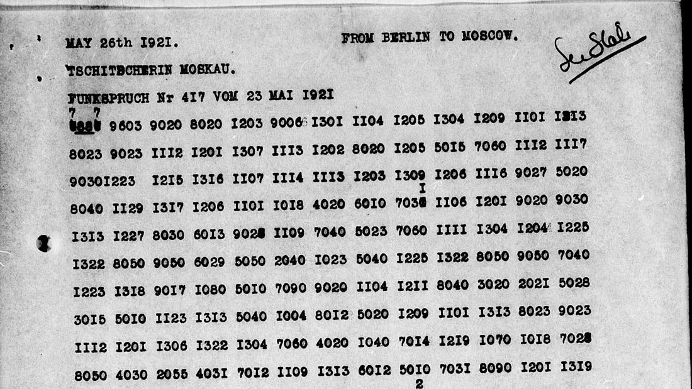

At a glanceNot solved · text not obtained
- The documents
- Kopp's telegram of 16 April 1921 and Lutovinov's Nr 417 of 23 May, typed copies sent to Washington by Admiral Mark L. Bristol.
- Where
- NARA RG 59, Central Decimal File 861.00, microfilm M316 roll 41 frames 0876–0877, roll 42 frame 0953. The whole file is rolls 40–48.
- The cipher
- A 4-figure table with literal phrase repeats, so no additive is at work on it. Its group values are unknown.
- How it was tried
- Ciphertext-only annealing against Russian, with shuffled controls, plus a search for a periodic numerical key. Each hypothesis failed its control.
- Still open
- All of it. The British decrypts, the War Department copies and most of the printed Soviet documents have not been checked.
01 The file
From March 1921 the US High Commission at Constantinople sent Washington envelopes of intercepted Moscow telegrams. A Russian radio operator working in the Embassy took them down. Bristol's despatch No. 153 of 20 April 1921 (861.00/8575) passes on the operator's opinion: the bulk of the Kopp–Chicherin traffic is in Russian, messages from Hilger and Staehler are in German, and the Bolsheviks “use old Russian code books” and sometimes apply a “Captain Murashenko” method, a numerical key added to or subtracted from the coded text. Bristol would not vouch for this. On 1 July he reported that anti-Bolsheviks had promised him the code, secured in Berlin, and that it never arrived.
The OCR gives 1,478 runs of figures, 66,640 groups, retransmissions and non-Soviet traffic included, so treat those counts as provisional. Several unrelated systems share the file:
- Letter groups to Stomoniakov: a columnar transposition with a new key per telegram. Two are deciphered, each on its own page: Lejava's gold payment and Voikov's buying order.
- Karakhan to Kopp, 29 April: a different 4-figure table, unread.
- 5-figure traffic with a word before the figures (SWET, MISTERIA, PALLADA, FORUM, ANCHAR, SIRIUS), with clear counters every 25 groups: unread.
- Austrian traffic running from 0 to 19999 with no leading zeros, and German telegrams: unread.
02 The small table

Kopp's telegram of 16 April (M316-041-0876, 0877) and Lutovinov's of 23 May (042-0953) share one shape. The first pair of each group is almost always 01–09, 10–13, 15 or a round 20–90; the second is 01–31 or a round 40–90. They give 717 groups as transcribed, the two April frames from blurred carbons. Phrases recur literally, for instance 1206 1214 1206 1101 1226 9010 1117 twice running on frame 0876.
03 What failed
- Chained consonant and vowel tables. Annealing the two pairs as letter tables scored about the same as shuffled controls (−5.42 against −5.54). From one group's second pair to the next group's first pair, mutual information is z = 2.2, against 22.9 inside a group.
- The second pair as a plain alphabet. It scored −3.69 per character, the same as its control and far from −2.11 for real Russian on that model.
- Each group as one letter. −2.43 to −2.50 against −2.40 to −2.54 for shuffled groups, and the text collapses into repeated letters. With 228 distinct groups in 715, nearly any mapping scores well.
- This table plus a periodic key on the clustered Berlin traffic. On Nr 461 a period of 14 scored z = 11.2, but the image shows 14 groups to a typed line. Stripping a key put only 9–15% of groups in the known vocabulary.
04 What it would take
Statistics alone cannot confirm a reading of a table this size. Any of these could change that:
- HW 12 at The National Archives: GC&CS was decrypting Soviet traffic in 1921. Whether Berlin traffic was among it is unchecked.
- RG 457, 6707N, “Russian Coded Messages, 1921”, the War Department copies, not digitised.
- A printed text of one of these telegrams. Dokumenty vneshnei politiki SSSR vol. IV could not be fully searched: the site hosting it refused further access during this work.
05 Sources
- NARA, RG 59, 861.00, M316 rolls 40–48: roll 41, roll 46.
- Bristol, No. 153, 20 April 1921: frame 0871. No. 336, 1 July 1921: M316-043-0936.
- John H. Tiltman, “Experiences 1920–1939”, NSA Doc ID 6618711.

Transcriptions, scripts and notes: targets/kopp1921/ in the repository.